Using Real-World Images
this is a video of an application to disease detection with the Cassava plant, here
Understanding ImageGeneration¶
On limitation that we face in the previous Notes was that it used a dataset with uniform images, Images of clothing that was staged and framed in 28 by 28. What happen when the subject are in different locations? for example:
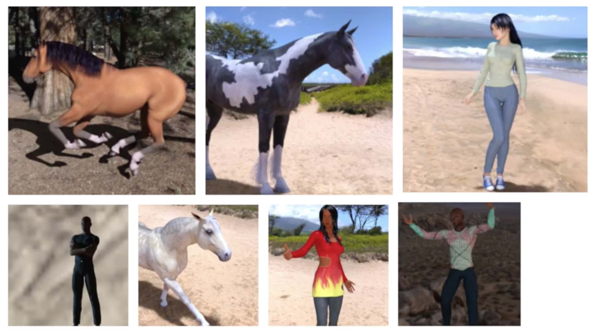
This dataset has images with different aspect ration, size and location. In some cases, there may even be multiple subjects. In addition to that, the earlier examples with a fashion data used a built-in dataset.
All of the data, previously, was handily split into training and test sets for you and labels were available. In many scenarios, that's not going to be the case and you'll have to do it for yourself.
we'll take a look at some of the APIs that are available to make that easier for you. In particular, the image generator in TensorFlow.
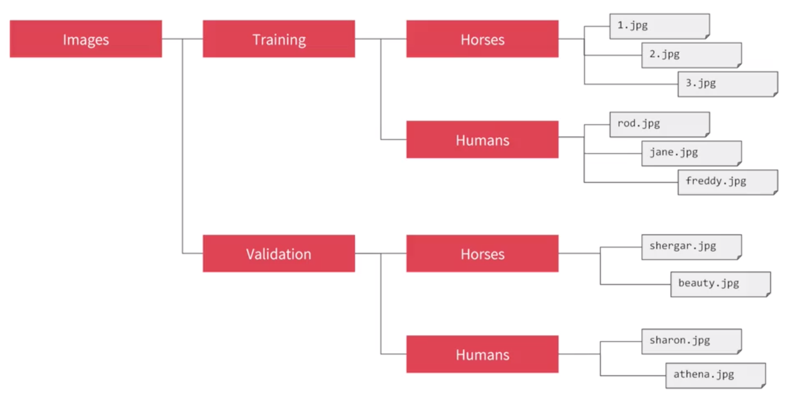
One feature of the image generator is that you can point it at a directory and then the sub-directories of that will automatically generate labels for you. So for example, consider the directory structure in the image above, you have sub-directories for training and validation. When you put sub-directories in these for horses and humans and store the images in there, the image generator can create a feeder for those images and auto label them for you.
let say i point the generator to the Training directory,the labels will be horses and humans and all of the images in each directory will be loaded and labeled accordingly.
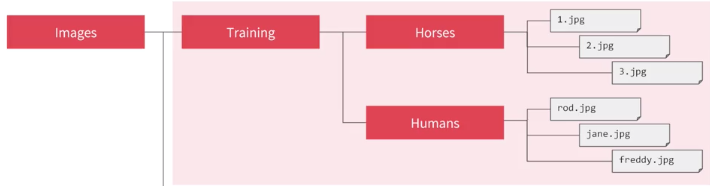
Image Generator in Code¶
the Image generator class is available in Keras.preprocessing.image and we import it like this
1 2 | from tensorflow.keras.preprocessing.image import ImageDataGenerator |
Now we can instantiate and image generator like this
1 | train_datagen = imageDataGenerator(rescale = 1./255) |
In this case we are passing rescale in order to normalize the data
Now we need to load the images, so, we can then call the flow from directory method on it to get it to load images from that directory and its sub-directories.
a common mistake that people point the generator at the sub-directory. It will fail in that circumstance. You should always point it at the directory that contains sub-directories that contain your images
1 2 3 4 5 | train_generator = train_datagen.flow_from_directory( train_dir, target_size = (300,300), batch_size = 128, class_mode = 'binary') |
1 2 3 4 5 6 7 | # Flow training images in batches of 128 using train_datagen generator validation_generator = validation_datagen.flow_from_directory( '/tmp/validation-horse-or-human/', # This is the source directory for training images target_size=(300, 300), # All images will be resized to 150x150 batch_size=32, # Since we use binary_crossentropy loss, we need binary labels class_mode='binary') |
The names of the sub-directories will be the labels for your images that are contained within them. Make sure the first parameter train_dir is pointing to the right directory.
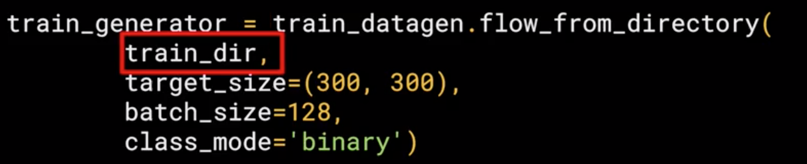
Now, images might come in all shapes and sizes and unfortunately for training a neural network, the input data all has to be the same size, so the images will need to be resized to make them consistent.
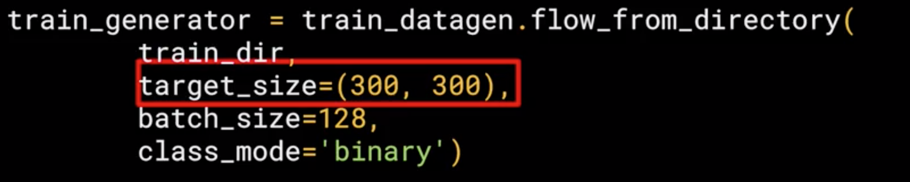
The nice thing about this code is that the images are resized for you as they're loaded. So you don't need to preprocess thousands of images on your file system.
The advantage of resize the data at runtime like this is that you can then experiment with different sizes without impacting your source data.
The images will be loaded for training and validation in batches where it's more efficient than doing it one by one.
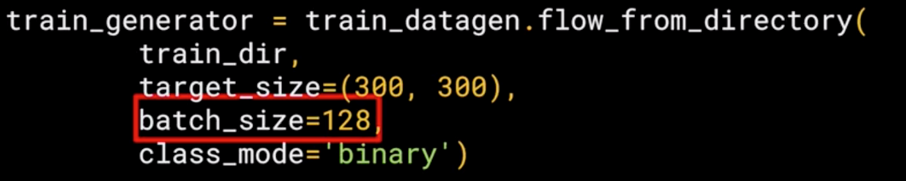
Finally, there's the class mode. Now, this is a binary classifier i.e. it picks between two different things; horses and humans, so we specify that here.
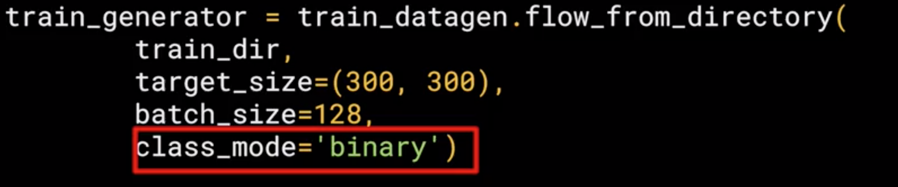
The validation generator should be exactly the same except of course it points at a different directory, the one containing the sub-directories containing the test images.
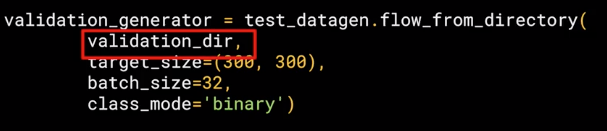
Defining a ConvNet to use complex images¶
Now we are going to see the model that will classify the human vs horses. this model is quite similar to the one that classify clothes, but with some minor differences that we are going to see.
1 2 3 4 5 6 7 8 9 10 11 | model = tf.keras.models.Sequential([ tf.keras.layers.Conv2D(16, (3,3), activation = 'relu', input_shape = (300,300,3)), tf.keras.layers.MaxPooling2D(2,2), tf.keras.layers.Conv2D(32, (3,3), activation = 'relu'), tf.keras.layers.MaxPooling2D(2,2), tf.keras.layers.Conv2D(64, (3,3), activation = 'relu'), tf.keras.layers.MaxPooling2D(2,2), tf.keras.layers.Flatten(), tf.keras.layers.Dense(512, activation = 'relu'), tf.keras.layers.Dense(1, activation = 'sigmoid') ]) |
The differences¶
The model is still sequential, but with some differences:
1. Three Convolutional and Maxpooling Layers

This reflect the higher complexity of the model, in the previous model we started with 28x28 but in this case we started with 300x300.
2. Input Shape
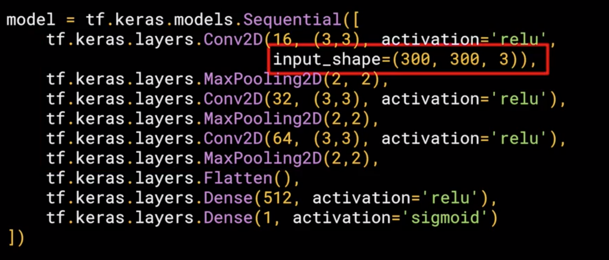
In this case we are dealing with color images or RGB images, which means we need 3 channels depth, so in this case the input shape is input_shape = (300,300,3)
3. Output Layer
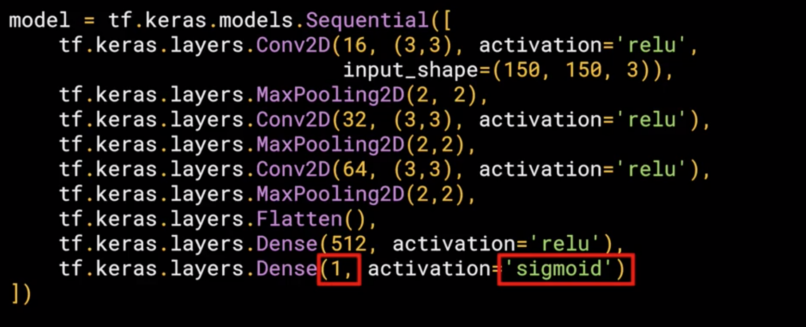
In the previous model we use 10 classes, so we have 10 neuron outputs, but in this case we are using just 1, but, we have two classes, how is this possible?, well this is because we are using a different activation in this case sigmoid which is the best activation for binary classification where one class will move towards 1 and the other towards 0.
Training the ConvNet with fit_generator¶
The compile function¶
we have a loss function and an optimizer. When classifying the ten items of fashion, in that previous model the loss function was a categorical cross entropy. But because we're doing a binary choice here, let's pick a binary_crossentropy instead. Now the about the optimizer, we used an Adam optimizer in this case we use the RMSprop, where we can adjust the learning rate to experiment with performance.
1 2 3 | from tensorflow.keras.optimizers import RMSprop model.compile(loss='binary_crossentropy', optimizer=RSSPROP(lr=0.001), metrics=['acc']) |
The Training function (fit_generator)¶
1 2 3 4 5 6 7 | history = model.fit_generator( train_enerator, steps_per_epoch = 8, epochs = 15, validation_data = validation_generator, validation_steps = 8, verbose = 2 ) |
Because we are using generators instead the dataset, now you call model.fit_generator, now let see the parameters:
- The first parameter is the training generator that you set up earlier. This streams the images from the training directory.
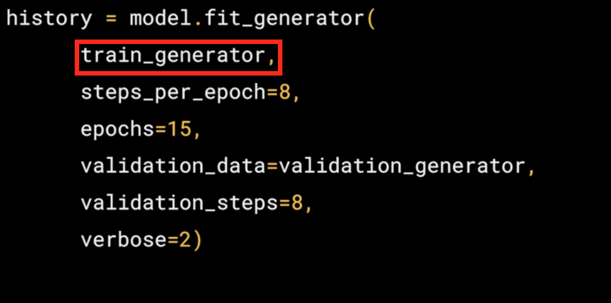
- Remember the batch size you used when you created it, it was 128, that's important in the next step. There are 1,024 images in the training directory, so we're loading them in 128 at a time. So in order to load them all, we need to do 8 batches(8 * 128 = 1024). So we set the
steps_per_epochto cover that.
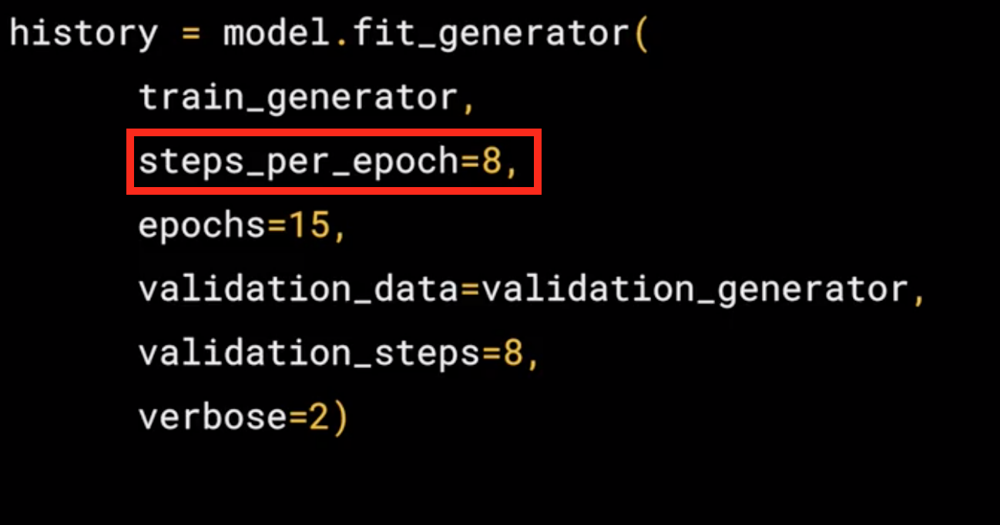
- Here we just set the number of epochs to train for. This is a bit more complex, so let's use, say, 15 epochs in this case.
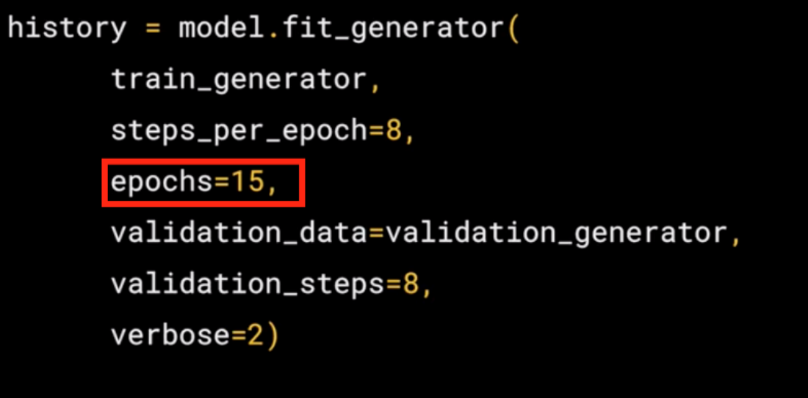
- Here we just set the number of epochs to train for. This is a bit more complex, so let's use, say, 15 epochs in this case.
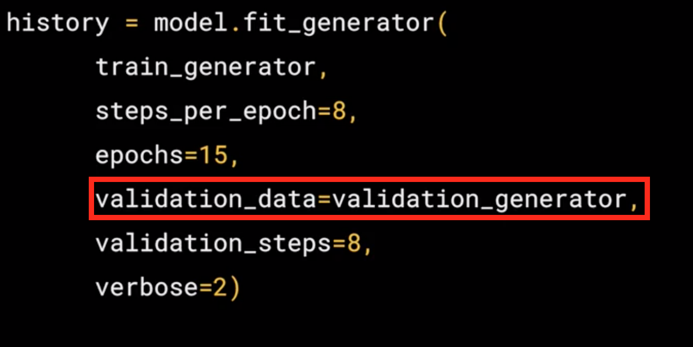
- It had 256 images, and we wanted to handle them in batches of 32, so we will do 8 steps.

- The verbose parameter specifies how much to display while training is going on. With verbose set to 2, we'll get a little less animation hiding the epoch progress.
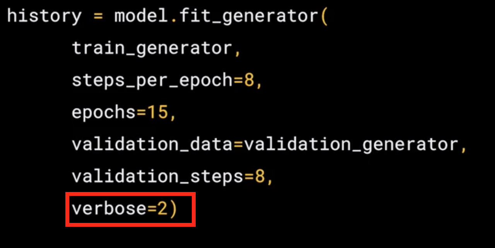
Running the Model¶
Now, we will need to run the model, in this case we are going to use a code that will contain some special code for colab and the colab for this model (without validation) can be found Horse-or-Human-NoValidation.
1 2 3 4 5 6 7 8 9 10 11 12 13 14 15 16 17 18 19 20 21 | import numpy as np from google.colab import files from keras.preprocessing import image uploaded = files.upload() for fn in uploaded.keys(): # predicting images path = '/content/' + fn img = image.load_img(path, target_size=(300, 300)) x = image.img_to_array(img) x = np.expand_dims(x, axis=0) images = np.vstack([x]) classes = model.predict(images, batch_size=10) print(classes[0]) if classes[0]>0.5: print(fn + " is a human") else: print(fn + " is a horse") |
Colab specific - Button to upload images¶
Here we show the code that is specific for colab, this will give me a button that i can use to pick another image that I'm going to use to make the prediction
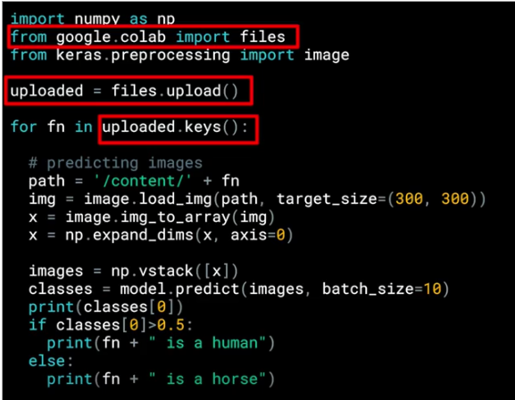
The images are will have a path, this image path is then loaded into this list called uploaded
1 | uploaded = files.upload() |
Loop to iterate in the collection that holds the images¶
now, we need a loop to "read" or iterate though all the images in the collection
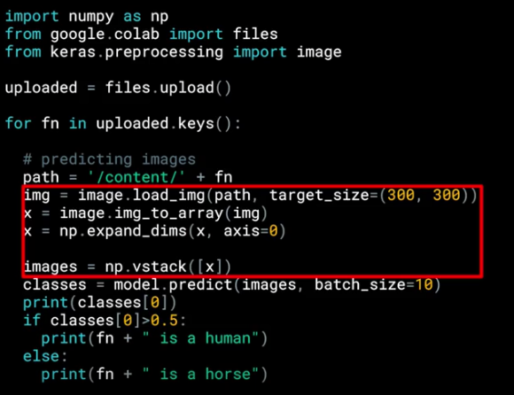
It is really important to set the target_size to the correct dimensions to match the input images that we specify designing the model.
1 2 3 | ... img = image.load_img(path, target_size=(300,300)) ... |
predict Predictions¶
after feed the images with the correct size we can start with the predictions, so we can call model.predict passing the details and we will get in return an array of classes.

In the case of binary classification, this will only contain one item with a value close to 0 for one class and close to 1 for the other, that is why we use the if at the end.